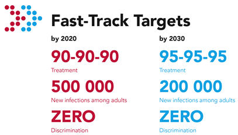

瓜瓜有一份问卷请你填写
声明
本调查责任权为研究者及其团队个人所有，酷儿论坛公众号仅为问卷调查协助发布平台，与项目本身无责任关系
太长不看：您可以扫描这个二维码或者点击阅读原文参与调查！
大家好！我是酷儿论坛的好朋友 Desmond，曾经也是酷儿论坛HIV项目组的负责人。
受杭州市疾病预防和控制中心的委托，我和我的研究团队正在进行一项关于杭州地区MSM人群性健康相关行为和知识的调查。本次调查的目的在于了解杭州MSM人群对于 HIV/AIDS 和性传播疾病的知识，以及性健康方面的行为和习惯，为相关部门的艾滋病防治提供数据参考。
我们将采取非概率抽样的方法，通过网络渠道发放自填式问卷，需要在此次调查中收集 1000 例有效答卷。我们非常需要您参与并转发我们的调查，如果您符合我们的要求并完成了调查，答卷通过审核后，您将获得人民币20元的受访者补贴。
我们的调查对象：16~30周岁的半年内有同性接触史的在杭州地区生活的男性（生理性别）。

FAQ
这个调查涉及这么多敏感信息，我的个人信息安全如何保障？
我们的问卷以匿名的方式进行，所有收集的数据只会脱敏后用于学术研究。填写问卷前的微信登录仅仅是出于限制作答次数的问题，并不会获取您的昵称、性别等公开信息。我们向您承诺：我们将严格遵守学术伦理，绝对不会将本次调查收集的信息用作学术以外的用途。
为什么我填写了问卷，我却没有收到受访者补贴？
囿于人力的限制，我们无法在短时间内审核大量的答卷。我们将在收到您的问卷后尽快审核答卷，如果您的答卷通过审核，您将收到人民币20元的受访者补贴。请您耐心等待！
如果我们发现您的问卷无法通过审核，我们将会向您发送短信或邮件。
由于支付宝隐私设置，我们强烈建议您填写可以收到转账的支付宝账号。如果我们无法通过您预留的支付宝账号向您支付补贴，我们将会向您发送短信或邮件。
为什么我填写了1-3个问题，问卷就结束了？
我们在线上问卷中设置了自动筛选功能，如果您不符合我们对调查对象的要求，您将无法完成后续的问题。
同样，我们非常欢迎您将本链接或问卷的链接转发给您身边的朋友。
我们对您的举手之劳表示诚挚的谢意。

您可以扫描这个二维码或者点击阅读原文参与调查！
图片来源：UNAIDS